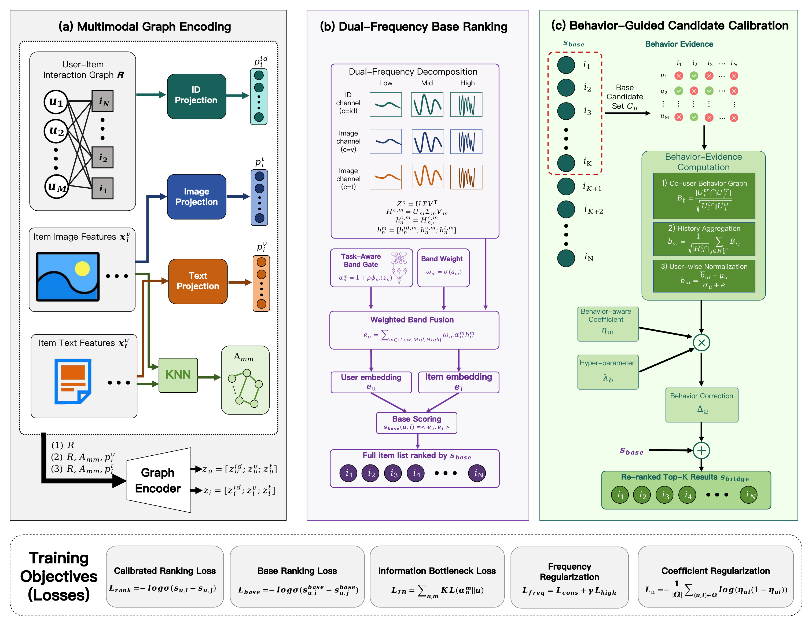
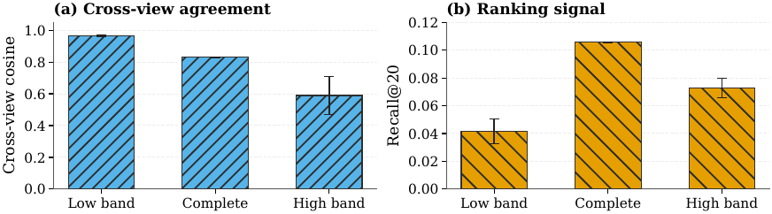
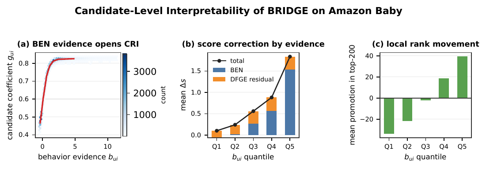
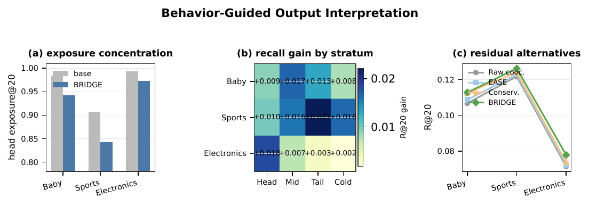

01
DFGE
Graph-smoothed ID, image, and text channels are separated into representation-spectral bands and fused into the base ranking geometry.
CIKM 2026 Full Research Paper
Let multimodal evidence retrieve plausible items. Let behavior evidence decide their local order.
University of the Chinese Academy of Sciences * Corresponding authors
Global score correction can distort the catalog. Restricting behavior-guided residuals to the base top-K candidates improves ranking while preserving the backbone.
Overview
Multimodal recommendation combines visual, textual, and collaborative signals, but stronger cross-view alignment does not always improve ranking. Our diagnostics show an effective range: moderate alignment helps, while stronger alignment suppresses recommendation-specific variation.
BRIDGE separates retrieval from local correction. A dual-frequency graph encoder builds the base ranking, training-only co-user overlap becomes signed behavior evidence, and the residual is applied only inside the base candidate set.
Method
BRIDGE keeps multimodal representation learning and behavior-guided score correction in distinct, testable roles.

01
Graph-smoothed ID, image, and text channels are separated into representation-spectral bands and fused into the base ranking geometry.
02
Training-only co-user overlap is aggregated over each user history and normalized into signed candidate evidence.
03
The evidence-weighted residual changes scores only inside the detached base top-K set during both training and inference.
Results
All methods use the same processed splits, BEIT3 features, and full-sort protocol. Competitive results are averaged over five seeds.
Recall@20
0.1128
+3.6% over the best baseline
NDCG@20
0.0525
+8.5% over the best baseline
A smaller but stable gain in the densest of the three evaluated domains.
Recall@20
0.1262
+6.3% over the best baseline
NDCG@20
0.0594
+10.4% over the best baseline
The strongest balanced improvement across recall and top-ranked ordering.
Recall@20
0.0778
+7.3% over the best baseline
NDCG@20
0.0385
+14.9% over the best baseline
Candidate-local calibration is most useful in this sparse, popularity-skewed domain.
| Dataset | Best baseline R@20 | BRIDGE R@20 | Gain | Best baseline N@20 | BRIDGE N@20 | Gain |
|---|---|---|---|---|---|---|
| Baby | 0.1089 | 0.1128 | +3.6% | 0.0484 | 0.0525 | +8.5% |
| Sports | 0.1187 | 0.1262 | +6.3% | 0.0538 | 0.0594 | +10.4% |
| Electronics | 0.0725 | 0.0778 | +7.3% | 0.0335 | 0.0385 | +14.9% |
Mechanism analysis
The controls support a qualified conclusion: candidate restriction and behavior evidence do most of the work; spectral routing provides a smaller complementary gain.



Reproducibility
@inproceedings{li2026bridge,
title = {BRIDGE: Behavior-Guided Residual Integration with
Dual-Frequency Graph Evidence},
author = {Li, Zesheng and Pan, Chengchang and Qi, Honggang},
booktitle = {Proceedings of the 35th ACM International Conference on
Information and Knowledge Management},
year = {2026},
publisher = {ACM},
doi = {10.1145/3799682.3840961},
isbn = {979-8-4007-2539-5/2026/11}
}